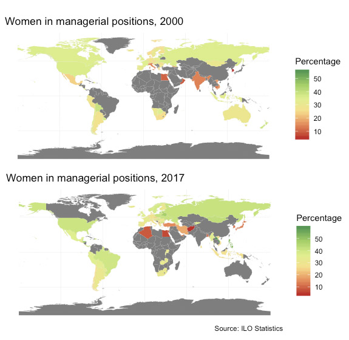

The data available starts from the year 2000, up to 2018. However, as the data from last year only includes 12 countries, the analysis will be until 2017, with data from 92 countries.
From 2000 to 2017, the world’s average of women in managerial positions hasn’t grown much, only 4.5%. It was 28% in 2000 and 32.5% in 2017.
In this map comparing 2000 to 20017, we can see that the countries’ percentages have remained pretty much stable, with America and Europe ranging between 25-40% and countries of the Middle East or Asia with the lowest percentages of women in managerial positions.